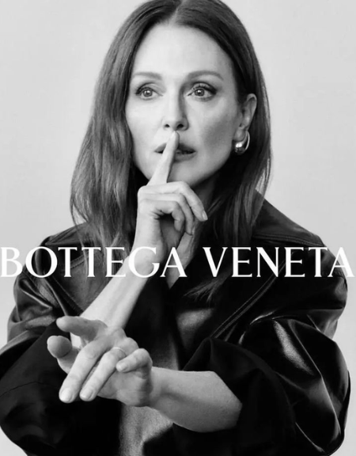
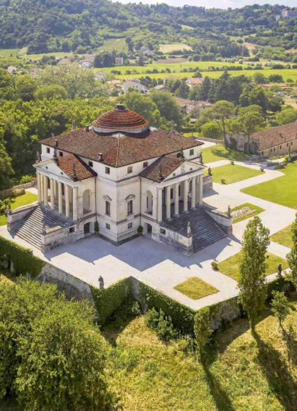
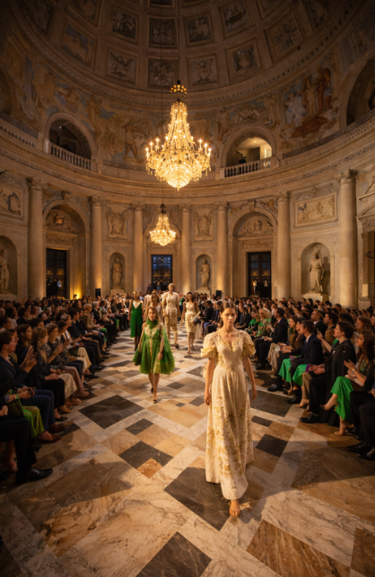
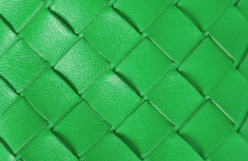

The Leather Atelier
A brand built on quiet luxury, artisanal leather craftsmanship, and discreet, logo-free design. Rooted in the traditional Italian "Bottega," the brand treats heritage as a timeless investment.
- Philosophy: Luxury is defined by the quality of the material and the mastery of the craft, not the noise of a logo.
- Target Audience: High-net-worth individuals and Gen-Z connoisseurs seeking authenticity and intrinsic value.
- Core Values: Artisanal excellence, logo-free identity, and a celebration of discreet individuality.

Generational Renewal
The primary growth challenge lies in renewing cultural relevance and attracting younger generations while strictly preserving the brand’s innate discretion.
The risk of "staying too silent" could allow culturally noisy competitors to limit long-term growth among younger segments who value history but require a point of entry.
Association: Villa La Rotonda
Founded in Vicenza, the cradle of Palladian Renaissance architecture, Bottega Veneta elevates itself to a cultural institution by anchoring its identity to Villa La Rotonda.
As Andrea Palladio’s absolute masterpiece, La Rotonda is an icon of harmony and proportion. Its structural integrity mirrors the brand’s artisanal DNA.
- Timelessness: Palladian integrity elevates accessories to structural masterpieces, ensuring relevance beyond seasonal trends.
- Authenticity: Deepens brand perception through the connection to Veneto’s high-quality leather production history.
- Shared Heritage: Creates a powerful narrative linking local craftsmanship to world-renowned architectural excellence.


From History to Engagement
Moving beyond "hype" to focus on material intelligence and active participation with cultural legacy.
- Fashion Show: An exclusive event inside Villa La Rotonda inspired by Renaissance geometric proportions.
- Permanent Museum: An exhibition within the Villa to explore the brand's history, featuring free entry for youth under 26.
- Interactive Storytelling: Utilizing guest-generated content and social media to increase community engagement.
The Outcome
Reinforcing unattainable allure and justifying higher prices through exclusivity and physical places.
- Perception: Deepened youth connection to brand roots and perceived authenticity.
- Sustainability: Increased brand value via sustainability and the recycling of old leather.
